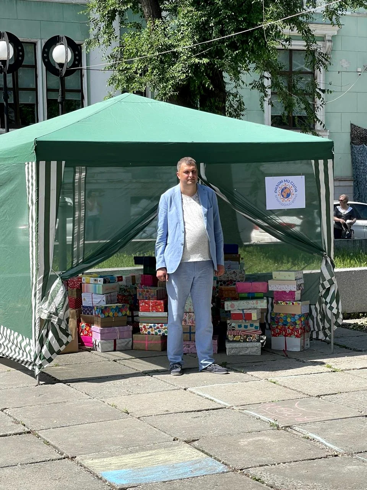
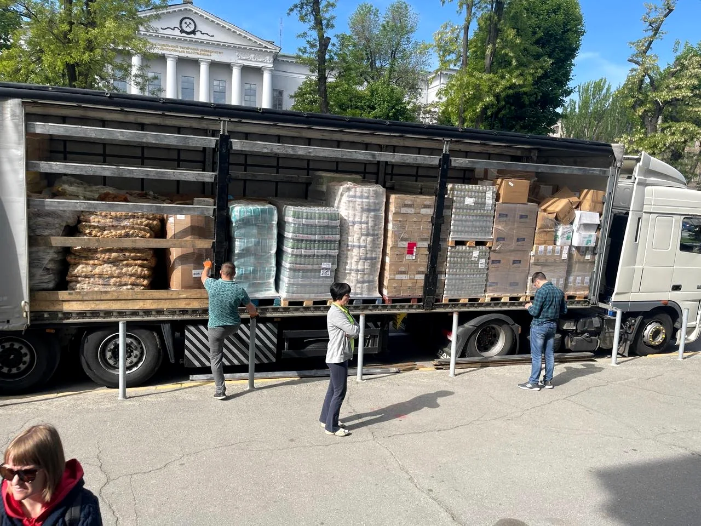
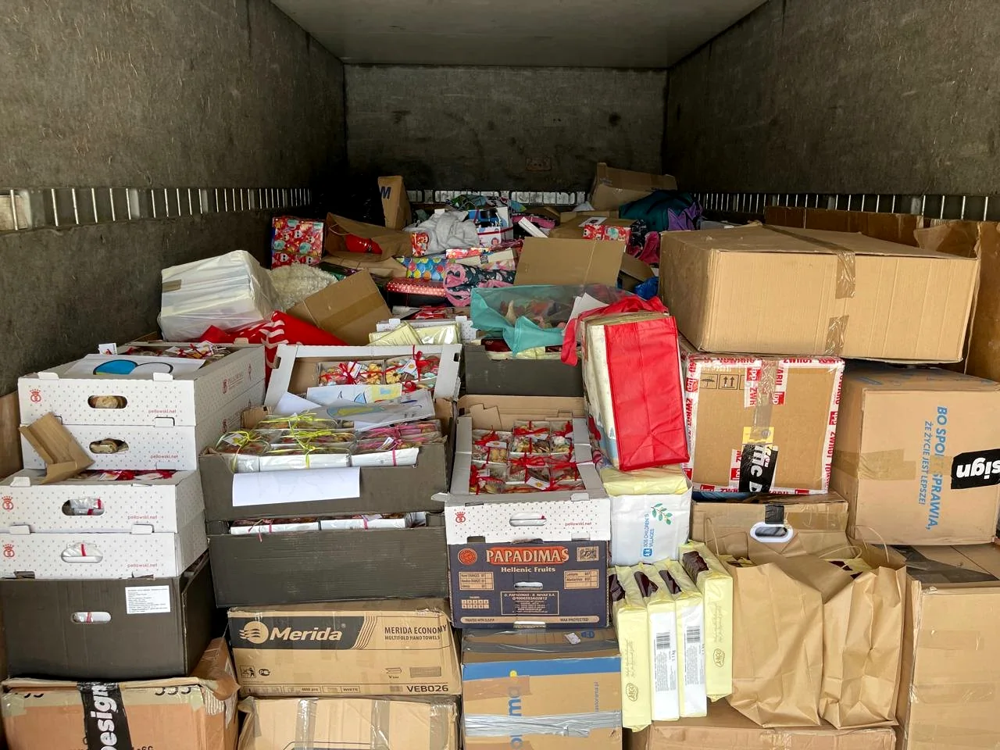
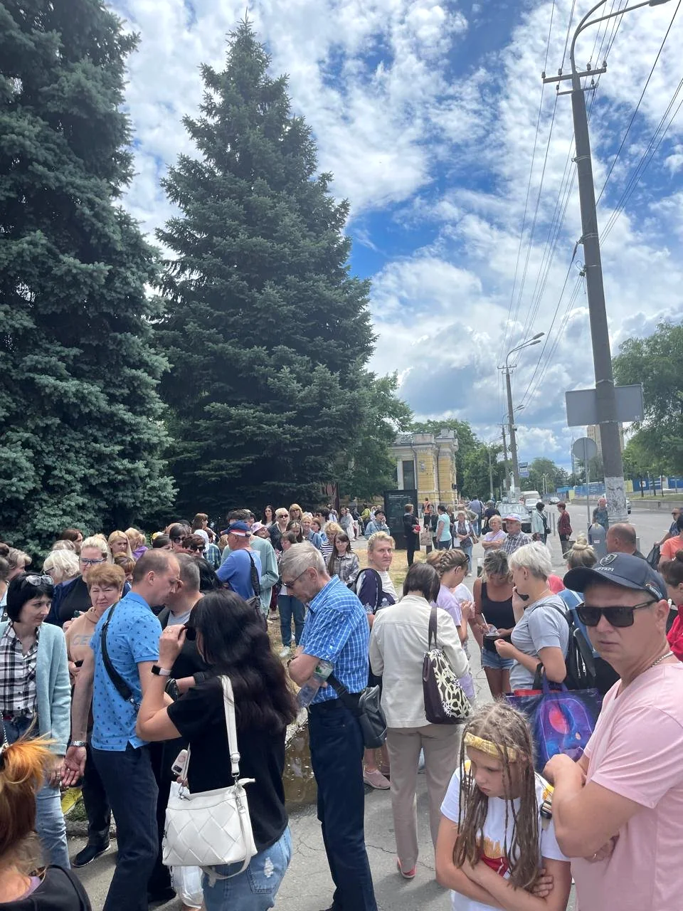
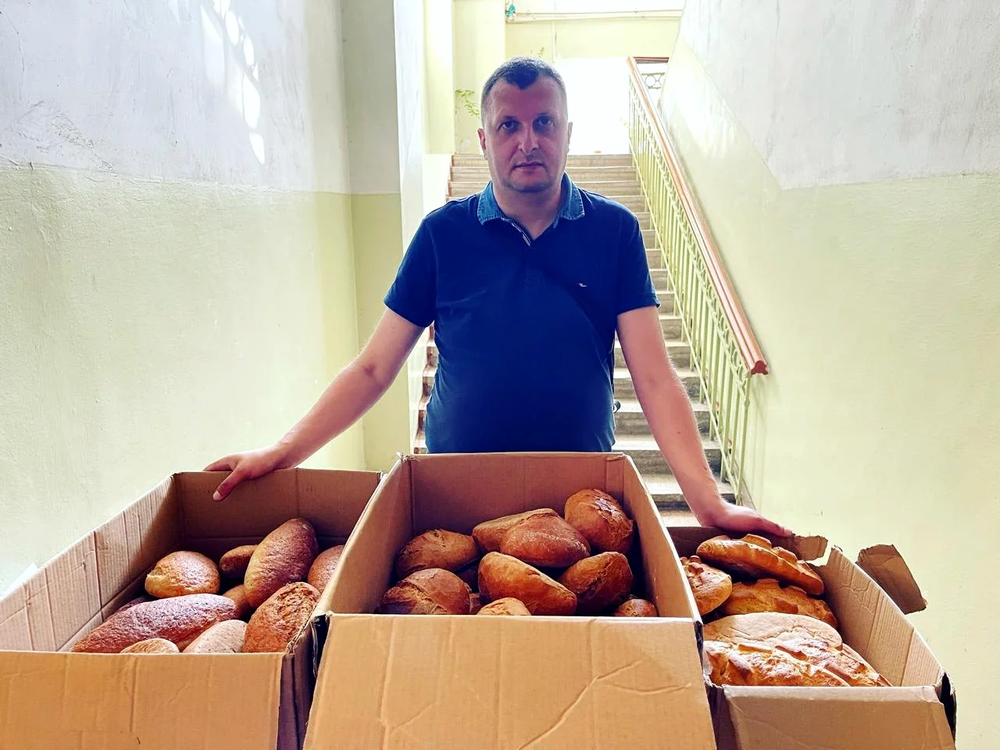
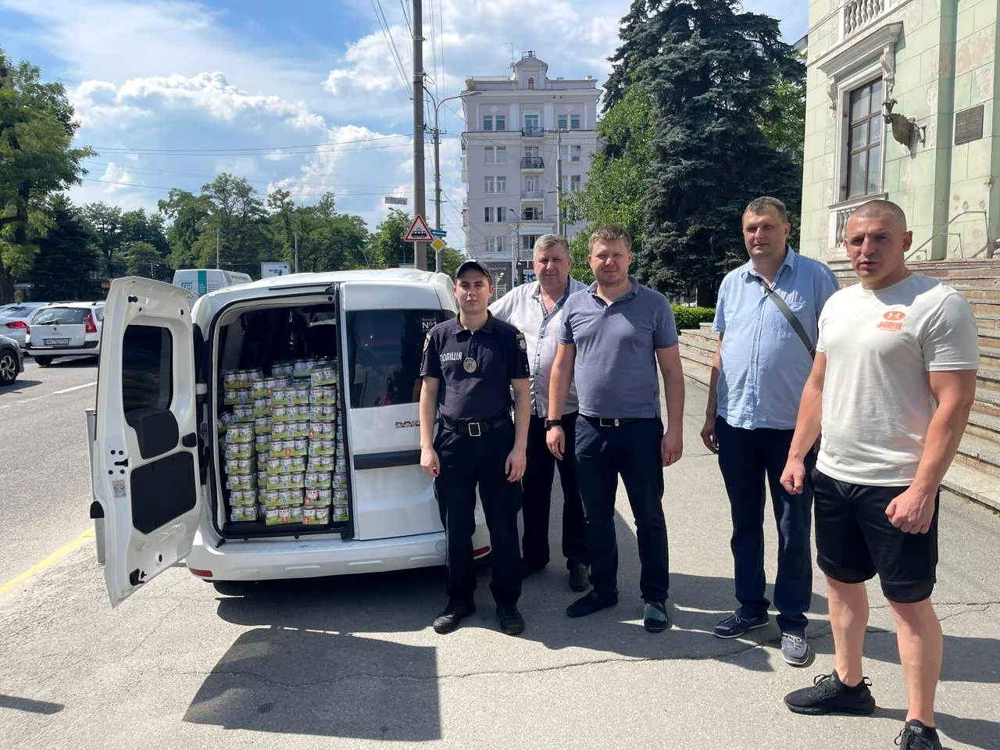
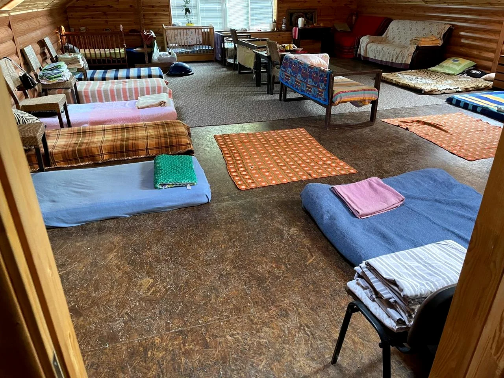
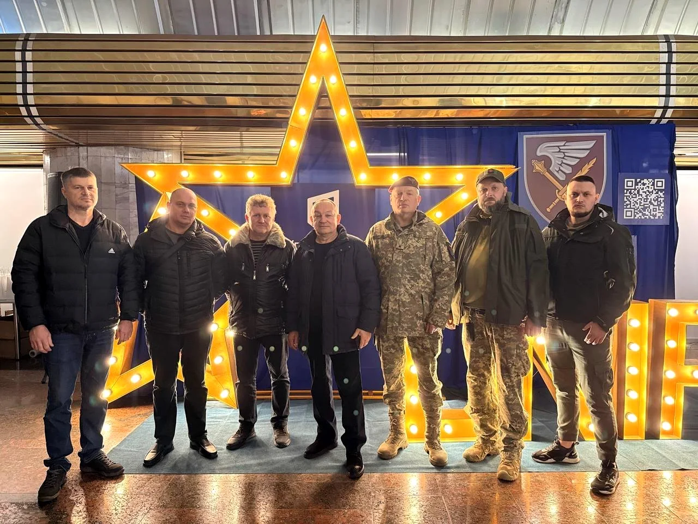
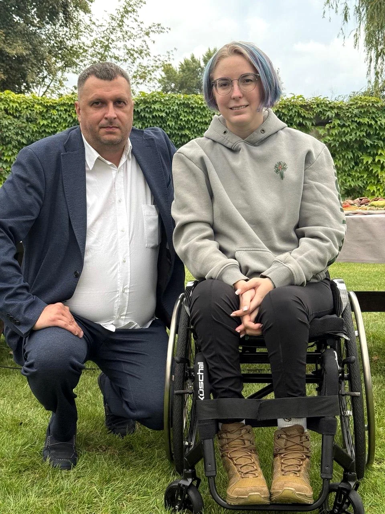

Фіксуємо потребу, пріоритет, адресу, відповідальних і формат допомоги.
Офіційний благодійний фонд • Україна
Підтримуємо людей, громади та захисників України
Благодійний фонд «Разом ми сила» організовує гуманітарну допомогу, логістику, підтримку родин, дітей, громад і військових підрозділів. Пожертви перетворюємо на конкретні передачі та відкриті звіти.
Офіційний благодійний фонд, допомога людям, громадам та захисникам України.
ЄДРПОУ
44717765
Країн-донорів
9
Міст допомоги
10
Благодійний фонд
Разом ми сила
ЄДРПОУ 44717765
Передано допомоги
500+ т
зафіксовано у квартальній звітності фонду
Підтримано людей і родин
38 000+
допомога ВПО, дітям, людям з інвалідністю та громадам
Доставлено гуманітарних рейсів
27
вантажні автомобілі з допомогою, включно з транспортом спецпризначення
Напрямів допомоги
6
їжа, речі, медицина, логістика, діти, громади
Опубліковано звітів
Фото + документи
публічні підтвердження передач і реквізити фонду
Про фонд
Офіційний, спокійний і відповідальний голос благодійності.
«Разом ми сила» працює як простір довіри між тими, хто готовий підтримати, і тими, кому потрібна допомога. Фонд фокусується на конкретних потребах, партнерській взаємодії та зрозумілій комунікації.
На сайті зібрані головні факти: напрями діяльності, фото роботи, квартальні показники, офіційні реквізити та швидкий зв'язок з фондом.
Керівництво
Директор фонду Координація партнерств, офіційних звернень і стратегічного розвитку фонду.Як працюємо
Від запиту до звіту: зрозуміла система допомоги.
Фонд працює як координаційний центр: приймає потребу, підтверджує ресурс, організовує логістику і показує результат партнерам.
Погоджуємо донорів, вантажі, закупівлі або збір коштів під конкретну задачу.
Організовуємо транспорт, сортування, видачу та комунікацію на місці.
Збираємо фото, цифри, підтвердження і переносимо їх у зрозумілу звітність.
Діяльність
Робота фонду в кадрі: не обіцянки, а процес і результат.
Фото з виїздів, подій і логістики показують масштаб роботи: партнери бачать людей, вантажі та організацію допомоги.








Підтримка захисників
Допомога тим, хто тримає країну.
Партнерські зустрічі, передача ресурсів і координація запитів для підрозділів та військових госпіталів.

Адресна допомога
Мобільність, гідність і конкретний результат.
Інвалідні візки, ходунці та інші засоби підтримки передаються людям, яким вони потрібні тут і зараз.
Оновлення
Нові записи, фото та короткі звіти з адмін-панелі.
Цей блок можна поповнювати самостійно: додавати події, фото з роботи фонду, посилання та короткі пояснення.
Звітність за квартал
Підсумки кварталу в цифрах, які легко перевірити і показати.
Інформацію з квартальної інфографіки перенесено в живий блок сайту: без дрібного тексту на картинці, з чіткими категоріями і акцентом на результат.
80
волонтерів залучені до роботи фонду
27
вантажних автомобілів отримано
500+ т
гуманітарного вантажу опрацьовано
38 000+
ВПО отримали допомогу через проєкти фонду
- 27
вантажних автомобілів, з яких 2 військового призначення
- 500+ т
гуманітарного вантажу
- 10
благодійних заходів
- 1
шелтер на утриманні фонду
- 500
дитячих візочків
- 70
інвалідних колясок
- 100
ходунців для дорослих
- 900
подарункових наборів для дітей до Дня захисту дітей
- 4
шелтерам
- 10
містам
- 38 тис.+
внутрішньо переміщеним особам
- 4
бригади ЗСУ
- 5
бригад ТРО
- 6
військових госпіталів
- 9
країн-донорів долучилися до допомоги
Вантажні автомобілі, гуманітарний вантаж, благодійні заходи та шелтер на утриманні фонду.
Візочки, коляски, ходунці, дитячі набори, продукти, речі першої необхідності та адресна допомога.
Пальне й необхідні позиції під конкретні виїзди, збори та запити громад без вигаданих показників.
Фотографії передач, логістики, роботи з людьми та партнерських гуманітарних рейсів.
Реєстраційні документи, банківські реквізити та звітна інфографіка в окремому розділі.
Звітність за квартал
Дані перенесено з оригінальної інфографіки фонду і оформлено як окремий репутаційний блок сайту.
Дивитися документиНапрями роботи
Сфери, у яких фонд діє системно і зрозуміло для партнерів.
Підтримка родин, які втратили стабільність
Адресна допомога ВПО, шелтерам і людям, які потребують швидкої підтримки після переїзду.
Потрібно: продуктові набори, гігієна, постіль, теплі речі, засоби мобільності.
Підтримати напрямБазова допомога, яку можна швидко передати
Фонд збирає, сортує і доставляє те, що закриває щоденні потреби людей.
Потрібно: крупи, консерви, дитяче харчування, вода, підгузки, побутові речі.
Підтримати напрямПідтримка лікарень, госпіталів і людей з інвалідністю
Окремий фокус - медичні потреби, реабілітаційні засоби та підтримка закладів.
Потрібно: медичні витратні матеріали, коляски, ходунці, гігієна, реабілітаційні засоби.
Підтримати напрямДоставляємо допомогу туди, де вона потрібна
Пальне, вантажні авто, координація маршрутів і робота з партнерами напряму впливають на швидкість допомоги.
Потрібно: пальне, ремонт транспорту, водії, складська логістика, пакування.
Підтримати напрямДитячі набори, харчування і турбота
Допомога дітям у родинах ВПО, громадах і закладах, де потрібні базові речі та увага.
Потрібно: дитяче харчування, підгузки, іграшки, подарункові набори, одяг.
Підтримати напрямСистемна допомога містам, шелтерам і локальним ініціативам
Фонд працює з громадами, щоб допомога доходила організовано і була зрозумілою для людей.
Потрібно: партнерські вантажі, волонтери, техніка, продукти, стабільні донори.
Підтримати напрямДля партнерів
Співпраця, у якій зрозумілі потреби, документи і результат.
Фонд відкритий до співпраці з бізнесом, міжнародними організаціями, волонтерськими групами, донорами та громадами.
Корпоративна допомога, товари, пальне, логістика, спільні збори та офіційні платежі.
Гуманітарні вантажі, документи, звітність, фото підтвердження і координований розподіл.
Обмін запитами, передача вантажів, спільні виїзди та локальна робота з людьми.
Адресні потреби, регулярна підтримка, зв'язок з фондом і зрозумілий шлях допомоги.
For international partners
Legal charity foundation providing humanitarian aid in Ukraine.
Razom My Syla works with humanitarian deliveries, community support, medical needs, mobility assistance and transparent reporting.
Дошка пошани
Подяка людям і партнерам, завдяки яким допомога доходить адресно.
Публічна вдячність прив'язана до реальних напрямів роботи: волонтери, партнери, логістика, медичні заклади, госпіталі та міжнародні донори.
Подяки, які можна розширювати
Короткий блок на головній показує обрані записи. Повна дошка пошани винесена на окрему сторінку, щоб її було легко поповнювати.
Переглянути всю дошку пошаниПрозорість
Офіційні реквізити фонду для партнерів і благодійників.
Одержувач
БЛАГОДІЙНА ОРГАНІЗАЦІЯ БЛАГОДІЙНИЙ ФОНД "РАЗОМ МИ-СИЛА"
ЄДРПОУ
44717765
IBAN UAH
UA623223130000026009000050984
Банк
АТ "Укрексімбанк", МФО 322313
Рахунок
26009000050984 • UAH (980)
Призначення
Благодійна допомога або підтримка збору на паливо
Документи
Файли, які допомагають партнерам швидко перевірити фонд.
Зібрали реєстраційні матеріали, банківські реквізити та звітну інфографіку в одному місці.
Офіційна перевірка
Ключові дані фонду в одному блоці.
Тут зібрані реквізити, реєстраційний код і файли, які зазвичай потрібні партнерам перед переказом або співпрацею.
- ЄДРПОУ
- 44717765
- IBAN UAH
- UA623223130000026009000050984
- Банк
- АТ "Укрексімбанк", МФО 322313
- Пошта фонду
- Krasnapolsky2022@gmail.com
PDF
Реєстраційні документи
Файл для первинної перевірки офіційного статусу організації.
PDF Банківські реквізитиОфіційний файл з даними для переказів і партнерських оплат.
JPG Квартальна інфографікаОригінальний візуальний звіт, з якого перенесені показники на сайт.
Фото Фото підтвердженняПублічні фото передач, логістики, гуманітарних рейсів і роботи з громадами.
Коротко
Три відповіді, які потрібні людині перед донатом.
Фонд офіційний?
Так. На сайті вказані офіційні реквізити, код ЄДРПОУ, банк та IBAN для переказів.
Куди йде допомога?
На гуманітарні вантажі, благодійні заходи, підтримку ВПО, шелтери, засоби мобільності та допомогу військовим напрямам.
Як побачити результат?
У розділі звітності є квартальні цифри та фото реальної роботи фонду з виїздів, передачі допомоги і партнерських подій.
Контакти
Для партнерів, благодійників і офіційних звернень.
Прямий контакт
Зв'язок з фондом
Krasnapolsky2022@gmail.com WhatsApp / Telegram: +380 (98) 131 33 55 Telegram-група: @razom_mi_sila1 +380 (98) 131 33 55 +380 (96) 127 09 00 УкраїнаОфіційно